| Version 6.0.3 |
Zum Schreiben von aussagekräftigen und zuverlässigen Tests gehört mehr als nur das Aufnehmen und Wiedergeben von Sequenzen. Sie können eine Testsuite zwar innerhalb kurzer Zeit mit diversen Sequenzen anfüllen, werden aber über kurz oder lang den Überblick verlieren, wenn Sie nicht darauf achten, den Tests eine verständliche Struktur zu geben.
Bevor Sie mit der Aufnahme von Sequenzen beginnen, die Sie anschließend mittels der nachfolgend beschriebenen Elemente zu Testfällen und Testsätzen zusammenstellen, ist es wichtig, dass
Zur Strukturierung der Tests stellt QF-Test diverse Elemente zur Verfügung. Dies sind zum einen die in Kapitel 5 besprochenen 'Komponenten' und zum anderen die in diesem Kapitel vorgestellten Testsätze, Testfälle, Testschritte und Sequenzen sowie Events, Checks etc.
|
| 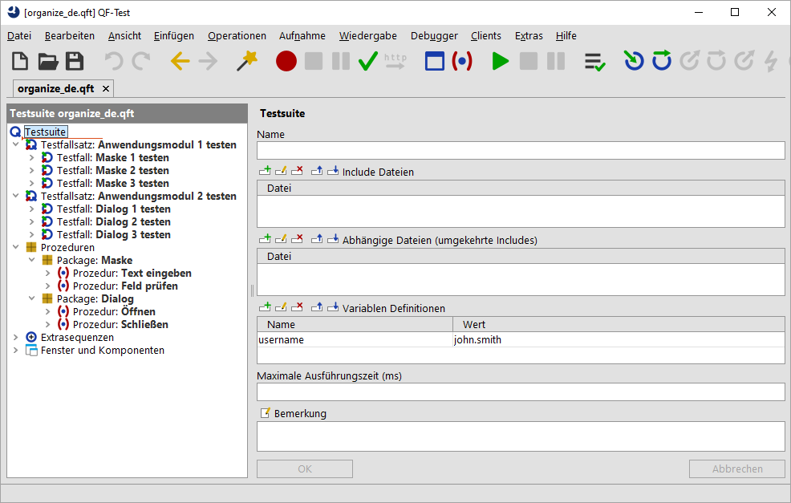 | ||
|
| Abbildung 8.1: Struktur einer Testsuite | ||
QF-Test bietet Strukturelemente auf unterschiedlichen Ebenen.
Auf oberster Ebene gibt es die 'Testsuite', in der die Tests sowie Komponenten abgespeichert werden. Jede 'Testsuite' wird in einer eigenen Datei abgespeichert. Zur erleichterten Handhabung einer größeren Anzahl von 'Testsuite' Dateien können diese in Projekte zusammengefasst werden.
Die 'Testsuite' hat eine feste Struktur, beginnend mit dem Testbereich, der beliebig viele 'Testfallsatz' Knoten enthalten kann, in die wiederum beliebig viele 'Testfall' Knoten oder auch weitere 'Testfallsätze' eingefügt werden können.
Anschließend gibt es einen Bereich für 'Prozeduren'. Als Strukturelement stehen hier 'Package' Knoten zur Verfügung, die beliebig viele 'Prozedur' oder weitere 'Package' Knoten enthalten können.
Der folgende Bereich 'Extrasequenzen' bietet die Möglichkeit, im Rahmen der Testentwicklung beliebige Knoten abzuspeichern und auszutesten.
Der letzte Knoten 'Fenster und Komponenten' ist reserviert für die in den Tests benötigten Komponenten.
'Testfälle' selbst können wiederum mit Hilfe von 'Testschritt' und 'Sequenz' Knoten gegliedert werden.
Ein weiteres wichtiges Strukturelement sind 'Vorbereitung' und 'Aufräumen' Knoten. Diese dienen der Erstellung von Vor- und Nachbedingungen und können ihrerseits in 'Abhängigkeit' Knoten zusammengefasst werden. 'Abhängigkeit' Knoten bieten darüber hinaus auch Strukturen für die Behandlung von Fehlern und unvorhergesehenen Ereignissen.
Die eigentliche Testausführung geschieht über Events wie zum Beispiel Mausklicks, Checks, Abfragen, Knoten zur Ablaufsteuerung und solche, die Prozesse steuern sowie weitere, in Verschiedenes beschriebene Knoten.
Die Verknüpfung der Tests mit den Testdaten erfolgt über Datentreiber.
Mit den Knoten 'Testfallsatz' und 'Testfall' bietet QF-Test eine einfache, pragmatische Form der Testfallverwaltung direkt innerhalb von QF-Test. Sie sind die wichtigsten Bausteine zur Strukturierung einer Testsuite. Sie bieten die Möglichkeit mittels 'Abhängigkeit' Knoten die 'Testfälle' so zu erstellen, dass sie völlig unabhängig voneinander sind. Notwendige Aufräumarbeiten werden bei entsprechend aufgebauten 'Abhängigkeiten' ebenso automatisch erledigt wie die Vorbereitungen für den aktuellen Test sowie die Fehlerbehandlung.
Auch hinsichtlich der Ergebnisdokumentation kommt den 'Testfall' Knoten eine zentrale Rolle zu. In den Reports ist der 'Testfall' das Strukturelement, auf dem die Fehlerstatistik und auch die Fehlerdokumentation basiert.
Ein 'Testfall' Knoten entspricht konzeptuell einem einzelnen elementaren Testfall und ist damit das entscheidende Bindeglied zwischen Testplanung, Testdurchführung und Testauswertung. Mit Hilfe von 'Abhängigkeit' Knoten können 'Testfälle' so voneinander isoliert werden, dass sie in beliebiger Reihenfolge ausgeführt werden können und auf unvorhergesehenes Verhalten reagiert werden kann. Damit ist es möglich, Teile von funktionalen Tests als Build-Test auszuführen oder etwa einen erneuten Testlauf durchzuführen, bei dem nur die fehlgeschlagenen 'Testfälle' wiederholt werden.
'Testfallsätze' sind im Prinzip einfach Sammlungen von zusammengehörigen 'Testfällen', die ähnliche Vor- und Nachbedingungen haben. 'Testfallsätze' können auch verschachtelt werden. Die Struktur der 'Testfallsatz' und 'Testfall' Knoten ist damit ähnlich der Struktur der 'Prozeduren' und 'Packages' Knoten. Der 'Testsuite' Knoten kann als spezielle Form eines 'Testfallsatzes' angesehen werden.
'Testsuite', 'Testfallsatz' und 'Testfall' Knoten können von jedem anderen Ort aus mit Hilfe eines 'Testaufruf' Knotens aufgerufen werden. Auf diesem Weg können sehr einfach Tests erstellt und verwaltet werden, die nur eine Untermenge von bestehenden Tests ausführen. Mit Blick auf den Report sollten 'Testaufruf' Knoten nicht innerhalb eines 'Testfall' Knotens ausgeführt werden, weil damit 'Testfälle' verschachtelt würden und vom Report nicht mehr richtig aufgelöst werden könnten. In diesem Fall wird eine Warnung ausgegeben.
Da 'Testfallsatz' und 'Testfall' Knoten durch 'Testaufruf' Knoten aufgerufen werden
können, verfügen sie analog zum 'Prozedur' Knoten über einen Satz von
Standardwerten für die Parameter. Diese werden auf dem Sekundärstapel gebunden und
können über einen 'Testaufruf' oder den Kommandozeilenparameter
-variable <Name>=<Wert> überschrieben werden.
Für einen 'Testfall' kann man zudem Variablen definieren, die auf dem Primärstapel gebunden werden und nicht von außen mittels 'Testaufruf' oder Kommandozeile überschrieben werden können. Primär- und Sekundärstapel sind in Abschnitt 6.1 näher beschrieben.
In der Liste der 'Charakteristischen Variablen' können die Namen der Variablen angegeben werden, deren Werte zum Beispiel bei datengetriebenem Testen für einen Durchlauf des jeweiligen 'Testfallsatz' oder 'Testfall' Knotens charakteristisch sind. Die Werte dieser Variablen werden in Protokoll und Report angezeigt und helfen somit bei der Analyse von Problemen.
Ein weiteres nützliches Attribut ist die 'Bedingung', vergleichbar mit der 'Bedingung' eines 'If' Knotens. Falls die 'Bedingung' nicht leer ist, wird der Knoten nur ausgeführt, falls der Wert des Ausdrucks wahr ist. Andernfalls wird der Test übersprungen.
Manchmal wird das Fehlschlagen eines 'Testfalls' für eine bestimmte Zeitdauer erwartet, z. B. wenn dieser erstellt wird, bevor ein Feature oder Bug-Fix im SUT verfügbar ist. Das Attribut 'Fehlschlagen erwartet wenn...' erlaubt es, solche 'Testfälle' zu markieren, so dass diese getrennt gezählt werden und nicht in die prozentuale Fehlerstatistik eingehen.
Primäre Bausteine einer Testsuite sind die 'Sequenz' und 'Testschritt' Knoten, die ihre Unterknoten einen nach dem anderen ausführen. Sie dienen der Strukturierung der Unterknoten eines 'Testfall'.
Der Unterschied zwischen 'Sequenz' und 'Testschritt' Knoten besteht darin, dass 'Testschritt' Knoten im Report protokolliert werden, 'Sequenz' Knoten hingegen nicht.
Neben den eigentlichen Testschritten enthält jeder Testfall auch Vor- bzw. Nachbedingungen. Die Vorbedingungen werden in 'Vorbereitung' Knoten implementiert, Nachbedingungen in 'Aufräumen' Knoten. In einfachen Fällen werden diese als Unterknoten eines 'Testfall' oder 'Testfallsatz' Knotens eingefügt.
QF-Test bietet allerdings noch eine mächtigere Variante für das Behandeln von Vor- und Nachbedingungen nämlich 'Abhängigkeit' Knoten. Diese ermöglichen nicht nur die Wiederverwendung, sondern bieten auch Möglichkeiten an, um auf unterschiedliche Verhalten während des Testlaufes zu reagieren.
'Testfall' Knoten mit durchdachten, passenden 'Vorbereitung' und 'Aufräumen' Knoten haben folgende wichtige Eigenschaften:
Im einfachsten Fall wird der gleiche Ausgangszustand für alle Testfälle eines Testfallsatzes benötigt. Dies kann mittels der folgenden Struktur realisiert werden:
|
| 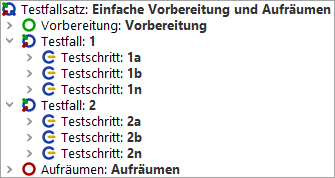 | ||
|
| Abbildung 8.2: Teststruktur mit einfacher 'Vorbereitung' und 'Aufräumen' | ||
Hier wird zu Beginn jedes Testfalls die Vorbereitung und nach Ende des Testfalls das Aufräumen ausgeführt. Im Protokoll ist die Ausführungsreihenfolge genau zu erkennen:
|
| 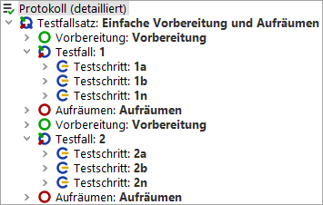 | ||
|
| Abbildung 8.3: Ausführungsreihenfolge bei einfacher Vorbereitung und Aufräumen | ||
Beim 'Testfallsatz' Knoten werden 'Vorbereitung' und 'Aufräumen' Knoten vor und nach jedem im 'Testfallsatz' enthalten Knoten ('Testfall' und 'Testfallsatz') ausgeführt. Bei einem 'Testfall' Knoten werden hingegen 'Vorbereitung' und 'Aufräumen' nur einmal ganz zu Beginn und Ende ausgeführt.
Falls die 'Vorbereitung' im obigen Beispiel den Start der Anwendung und die 'Aufräumen' Knoten das Beenden dieser beinhaltet, würde vor jedem Testfall die Anwendung gestartet und danach wieder gestoppt. Diese Vorgehensweise ist wenig effizient. Daher bietet QF-Test eine umfassendere Struktur, den 'Abhängigkeit' Knoten, zur Herstellung der Vorbedingungen und dem effizienten Umgang mit Aufräumarbeiten.
In mancher Hinsicht ist das Schreiben von Tests dem Programmieren nicht unähnlich. Nachdem die ersten Schritte gemeistert sind, tendieren Tests ebenso wie Programmcode dazu, unkontrolliert auszuufern. Das funktioniert so lange ganz gut, bis irgendein grundlegender Baustein, auf den man sich verlassen hat, geändert werden muss. Ohne saubere Struktur brechen Programme ebenso wie Tests an diesem Punkt in sich zusammen, da der Aufwand für die Anpassung an die neue Situation höher ist als gleich von vorne anzufangen.
Ein Schlüsselpunkt, um dieses Problem zu verhindern, ist die Vermeidung von Redundanz. Wenn Sie sich zu sehr auf die Aufnahmefunktion allein verlassen, besteht die Gefahr, genau diese Redundanz zu erzeugen. Ein Beispiel: Sie nehmen verschiedene Sequenzen auf, die mit den Komponenten eines Dialogs interagieren. Um diese Sequenzen möglichst unabhängig voneinander zu halten, beginnen Sie jede Sequenz damit, dass Sie den Dialog öffnen. Analog beenden Sie die Sequenzen mit dem Schließen des Dialogs. Das ist eigentlich eine gute Idee, erzeugt aber Redundanz, da die Events zum Öffnen und Schließen des Dialogs in jeder einzelnen Sequenz vorkommen. Stellen Sie sich vor, was passiert, wenn sich das SUT auf eine Weise ändert, die dazu führt dass dieser Teil nicht mehr funktioniert, z.B. weil erst ein kleines Bestätigungsfenster geschlossen werden muss, bevor der Dialog geschlossen werden kann. Jetzt müssen Sie durch die gesamte Testsuite gehen, alle Stellen finden, an denen der Dialog geschlossen wird und jede einzelne Stelle an die neuen Gegebenheiten anpassen. Der blanke Horror...
Um noch einmal auf die Analogie zurückzukommen: Die entsprechende Art der Programmierung wird Spaghetti Programmierung genannt und führt zu der gleichen Art von Wartungsproblemen. Diese können vermieden werden, wenn identische Teile an einer Stelle zusammengefasst werden, wo sie bei Bedarf aufgerufen werden. Eine Anpassung an neue Gegebenheiten erfordert dann nur noch Modifikationen an dieser einen Stelle.
|
| 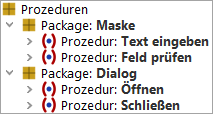 | ||
|
| Abbildung 8.4: 'Packages' und 'Prozeduren' | ||
QF-Test verfügt über einen Satz von Knotentypen, der diese Art der Modularisierung ermöglicht. Dabei handelt es sich um die Knoten 'Prozedur', 'Prozeduraufruf' und 'Package'. Eine 'Prozedur' ist einer 'Sequenz' sehr ähnlich, abgesehen davon, dass der 'Name' der 'Prozedur' zur Referenzierung durch einen 'Prozeduraufruf' Knoten dient. Ein 'Prozeduraufruf' wird ausgeführt, indem die Kontrolle an die entsprechende 'Prozedur' übergeben wird. Mit dem letzten Kindknoten der 'Prozedur' ist dann auch der 'Prozeduraufruf' beendet.
'Packages' sind dazu da, 'Prozeduren' noch mehr Struktur zu geben, indem zusammengehörende 'Prozeduren' in einem 'Package' zusammengefasst werden können. Eine Hierarchie von 'Packages' und 'Prozeduren' ist unter dem Knoten 'Prozeduren' angesiedelt.
Eine 'Prozedur', die immer exakt die selben Schritte ausführt, egal wie und woher sie aufgerufen wird, ist nur von sehr begrenztem Nutzen. Um obiges Beispiel fortzuführen, könnte eine 'Prozedur' beispielsweise den Dialog öffnen und seine Felder mit einigen Werten vorbelegen. Diese Werte sollten dann natürlich nicht hart in der 'Prozedur' verdrahtet sein, sondern wir wollen sie beim 'Prozeduraufruf' individuell festlegen. Zu diesem Zweck können Parameter für eine 'Prozedur' definiert werden. Im 'Prozeduraufruf' werden dann Werte für diese Parameter festgelegt. Diese sind nur für genau diese Ausführung der 'Prozedur' gültig. Eine ausführliche Beschreibung zur Definition von Parametern und allgemein Variablen in QF-Test, finden Sie in Kapitel 6. Zum besseren Verständnis ihres Zusammenspiels sollten Sie auch einen Blick auf die detaillierte Dokumentation der 'Prozedur' und 'Prozeduraufruf' Knoten werfen.
Eine Testsuite Bibliothek mit allgemein nützlichen 'Prozeduren'
wird von QF-Test unter dem Namen qfs.qft zur Verfügung
gestellt. Dieser Bibliothek ist ein ganzes Kapitel des Tutorials
gewidmet. Abschnitt 23.1 erklärt, wie Sie die
Bibliothek direkt in Ihre Testsuiten einbinden.
Wenn Sie in mehreren Testsuiten arbeiten, dann könnten Sie in die Situation kommen, dass Sie manche wiederverwendbaren Sequenzen bzw. Testschritte nur von einer bestimmten Testsuite aus ansprechen möchten. Wenn Sie solche lokale 'Prozeduren' erstellen wollen, dann müssen Sie als erstes Zeichen des Prozedurnamens ein '_' definieren. Das '_' markiert die 'Prozedur' als lokal in der jeweiligen Testsuite.
Aufrufe von lokalen 'Prozeduren' können nur innerhalb der Testsuite eingefügt werden, in der diese 'Prozedur' definiert ist. Sie können dasselbe Konzept auch für lokale 'Packages' nutzen.
Wenn Sie 'Prozeduren' in anderen 'Prozeduren' aufrufen, könnte es manchmal von Vorteil sein, nicht den vollen Namen der 'Prozedur' definieren zu müssen.
So genannte 'relative' Prozeduraufrufe können nur in 'Packages' eingefügt werden, welche das Attribut 'Grenze für relative Aufrufe' (siehe auch 'Grenze für relative Aufrufe') gesetzt haben. Der Aufbau von relativen Aufrufen sieht wie folgt aus:
|
|
|
||||||||||
|
| Tabelle 8.1: Relative Prozeduraufrufe | ||||||||||
Wie Sie sehen können, wird für jede Ebene einfach ein Punkt hinzugefügt. Eine 'Prozedur' zwei Ebenen höher, wird also mittels drei Punkten referenziert (Die aktuelle Ebene zählt auch mit).
Sie sollten Tests in einzelnen Testschritten organisieren, wobei idealerweise jeder Testschritt einem QF-Test 'Prozedur' Knoten entspricht. QF-Test bietet unterschiedliche Methoden um 'Prozeduraufruf' Knoten anzulegen:
Diese Methoden funktionieren auch für 'Bezug auf Abhängigkeit' Knoten bis auf die letzten beiden.
Sie können Parameter von 'Prozeduren', 'Abhängigkeiten' oder 'Testfälle' automatisch mittels des Menüs »Operationen«-»Knoten parametrisieren« erstellen.
Der Parametrisierungsdialog ermöglicht es Ihnen noch weitere Details über das Erstellen der Parameter zu definieren, z.B. ob nur Parameter für Texteingaben oder Checkknoten zu erstellen sind.
Diese Konvertierung kann sehr hilfreich sein um sofort während der Entwicklung Prozeduren zu erstellen. Unter 'Extrasequenzen' können Sie 'Sequenzen' in 'Prozeduren' konvertieren und in den 'Prozeduren' Bereich verschieben.
3.1+ Wenn Sie eine 'Sequenz' oder 'Testschritt' unter einem 'Testfall' konvertieren, dann erstellt QF-Test automatisch eine 'Prozedur' und fügt an Stelle der 'Sequenz' oder des 'Testschritt' den entsprechenden 'Prozeduraufruf' ein.
Die Konvertierung kann mittels dem Menü »Operationen«-»Knoten konvertieren in«-»Prozedur« oder über das Tastaturkürzel [Shift-Strg-P] angestoßen werden.
 Video: Abhängigkeiten
Video: Abhängigkeiten
'Abhängigkeiten' stellen eine mächtige und optimierte Variante für die Herstellung von Vor- und Nachbedingungen dar. Sie sind unverzichtbar zur Ausführung von Tests im QF-Test Daemon Modus. Ihre prinzipielle Funktionsweise ist wie folgt:
Testfälle als auch andere Abhängigkeiten können sich mittels 'Bezug auf Abhängigkeit' Knoten auf 'Abhängigkeit' Knoten, die im 'Prozeduren' Bereich abgelegt wurden, beziehen. Somit können 'Vorbereitung' und 'Aufräumen' Knoten, die sich in einem 'Abhängigkeiten' Knoten befinden von mehreren Testfällen genutzt werden - im Gegensatz zu denjenigen, die direkt in einem 'Testfall' oder 'Testfallsatz' Knoten liegen.
Für das Verständnis der Arbeitsweise von 'Abhängigkeiten' ist es hilfreich, sich das Vorgehen eines Testers bei manuellen Tests anzusehen: Zunächst führt er alle notwendigen Vorbereitungen und dann den ersten Testfall aus. Wenn bei der Ausführung des Testfalls Fehler auftreten, wird er gegebenenfalls Fehlerbehandlungsroutinen ausführen. Als nächstes prüft er, welche Vorbedingungen für den nächsten Test gelten und wird erst dann eventuelle Aufräumarbeiten durchführen. Dabei wird er nur das aufräumen, was für nächsten Testfall nicht mehr benötigt wird. Als nächstes geht er alle Vorbedingungen durch und prüft, ob die notwendigen Voraussetzungen noch bestehen oder ob zum Beispiel auf Grund von Fehlern im vorhergehenden Testfall wiederhergestellt werden müssen. Falls das SUT in einen stark fehlerhaften Zustand versetzt wurde, führt er weitere Aufräumarbeiten aus bevor er die Vorbedingungen für den nächsten Testfall herstellen kann.
Genau diese Vorgehensweise können Sie über QF-Test 'Abhängigkeiten' abbilden.
Mit den 'Abhängigkeiten' werden die Nachteile der klassischen 'Vorbereitung' und 'Aufräumen' Knoten, dass zum einen die 'Vorbereitung' Knoten nur über die Verschachtelungen von Testfallsätzen geschachtelt werden können und zum anderen in jedem Fall der 'Aufräumen' Knoten ausgeführt wird, behoben. Beides ist nicht sonderlich effizient. 'Abhängigkeit' Knoten geben nicht nur eine Antwort auf diese beiden Punkte sondern bieten zudem Strukturelemente für die Behandlung von Fehlern und unvorhergesehenen Ereignissen.
'Abhängigkeiten' werden in vielen mitgelieferten Beispieltestsuiten verwendet, zum Beispiel:
doc/tutorial die Testsuite namens dependencies.qft.
Die Abhängigkeiten in dieser Testsuite werden ausführlich im Tutorial in Kapitel 16
erläutert.
demo/carconfig die Testsuite carconfig_de.qft,
die ein realistisches Beispiel enthält.
swt_addressbook.qft, die für SWT-Anwender
ein Beispiel bietet.
demo/eclipse die Testsuite namens eclipse.qft,
in der Sie eine verschachtelte 'Abhängigkeit' finden.
doc/tutorial verwendet das Datentreiber-Demo datadriver.qft
'Abhängigkeiten'.
Wenn Sie im Debugger in Einzelschritten durch diese Testsuiten gehen und sich die zugehörigen Variablenbindungen und Protokolle ansehen, sollten Sie ein gutes Gefühl für diese Technik bekommen. Bitte beachten Sie, dass Sie veränderte Testsuiten am besten in einem projektspezifischen Ordner speichern.
'Abhängigkeiten' können an zwei Stellen definiert werden:
Zusätzlich zu ihrer eigenen 'Abhängigkeit' können 'Testfälle' und 'Testfallsätze' die 'Abhängigkeit' von ihrem Parentknoten erben.
Eine 'Abhängigkeit' sollte sich jeweils nur um eine Vorbedingung kümmern. Hat diese ihrerseits Vorbedingungen, sollten diese zu Grunde liegenden Schritte von anderen 'Abhängigkeiten' übernommen werden. Dies kann implizit durch Erben der 'Abhängigkeit' von einem Parentknoten oder explizit durch einen 'Bezug auf Abhängigkeit' Knoten geschehen.
Die eigentliche Implementierung der Vor- und Nachbedingungen geschieht in 'Vorbereitung' und 'Aufräumen' Knoten innerhalb der 'Abhängigkeit'.
Enthält ein 'Testfallsatz' oder 'Testfall' Knoten sowohl 'Abhängigkeit' Knoten als auch 'Vorbereitung' und 'Aufräumen' Knoten, wird die 'Abhängigkeit' zuerst aufgelöst. 'Vorbereitung' und 'Aufräumen' Knoten haben keinen Einfluss auf den Stapel von Abhängigkeiten.
Die Ausführung einer 'Abhängigkeit' gliedert sich in drei Phasen:
Die im vorliegenden Kapitel verwendeten Beispiele beziehen sich alle auf Testfälle, die eine Kombination der folgenden Vorbedingungen und Nachbereitungen erfordern:
Vor der Ausführung eines 'Testfall' Knotens prüft QF-Test, ob dieser einen 'Abhängigkeit' Knoten besitzt oder erbt. In diesem Fall prüft QF-Test, ob der 'Abhängigkeit' Knoten seinerseits weitere 'Abhängigkeiten' einbezieht. Auf Basis dieser Analyse erstellt QF-Test zunächst eine Liste der auszuführenden 'Abhängigkeiten'. Dies entspricht Schritt 1 des nachfolgenden Beispiels.
Als nächstes prüft QF-Test, ob bereits für vorhergehende 'Testfälle' 'Abhängigkeiten' ausgeführt wurden. Falls ja, vergleicht QF-Test die Liste der ausgeführten 'Abhängigkeiten' mit den aktuell benötigten. Für nicht mehr benötigte 'Abhängigkeiten' werden nun die 'Aufräumen' Knoten ausgeführt. Danach durchläuft QF-Test alle 'Vorbereitung' Knoten, wobei mit den grundlegenden 'Abhängigkeiten' begonnen wird. Der Name des ausgeführten 'Abhängigkeiten' Knotens wird jeweils vermerkt. Diese Liste wird Abhängigkeitenstapel genannt.
Test von Anwendungsmodul 1.
Es handelt sich um den ersten ausgeführten 'Testfall' Knoten.
Diese Schritte lassen sich im Protokoll genau nachverfolgen:
|
| 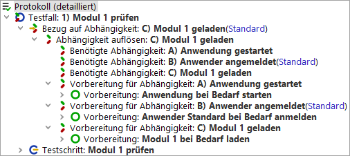 | ||
|
| Abbildung 8.5: Stapel von Abhängigkeiten A-B-C | ||
Nach Ausführung des 'Testfall' Knotens verbleibt die Anwendung zunächst in dem Zustand, in den der 'Testfall' sie versetzt hat. Erst nach der Analyse der 'Abhängigkeiten' des nächsten 'Testfall' Knotens werden bei Bedarf 'Abhängigkeiten' abgebaut - in umgekehrter Ausführungsreihenfolge der 'Vorbereitung' Knoten. Anschließend werden die 'Vorbereitung' Knoten aller benötigen 'Abhängigkeiten' durchlaufen. Dieser Punkt ist sehr wichtig. Es werden also nicht einfach die restlichen 'Vorbereitung' Knoten ausgeführt, sondern die aller einbezogenen 'Abhängigkeit' Knoten. Der Grund hierfür ist, dass es, wie bereits erwähnt, in der Natur des Testens liegt, dass es zu Fehlerzuständen kommen kann. Daher wird vor Ausführung eines 'Vorbereitung' Knotens geprüft, ob auch die jeweils zugrunde liegenden Voraussetzungen erfüllt sind. Die 'Vorbereitung' Knoten sollten daher so aufgebaut sein, dass zunächst geprüft wird, ob die Voraussetzung bereits gegeben ist und nur bei Bedarf der gesamte 'Vorbereitung' Knoten durchlaufen wird.
|
| 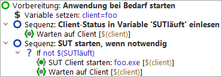 | ||
|
| Abbildung 8.6: Typischer 'Vorbereitung' Knoten | ||
Außerdem sollten 'Vorbereitung' Knoten und 'Aufräumen' Knoten immer in der Lage sein, Programmzustände, die auf Grund von Fehlern nicht dem Sollzustand entsprechen, zu bereinigen, so dass der nachfolgende 'Testfall' nicht von vorangehenden Fehlern beeinträchtigt wird. Auch sollte ein 'Aufräumen' Knoten nicht zu einem Fehler führen, wenn der angestrebte Zustand bereits besteht. Wenn das SUT zum Beispiel beendet werden soll, darf es zu keinem Fehler kommen, wenn es, aus welchem Grund auch immer, schon vor Ausführung des 'Aufräumen' Knotens nicht mehr läuft.
Test eines Dialogs in Anwendungsmodul 2
Auch der Aufräumen-Schritt erscheint im Protokoll:
|
| 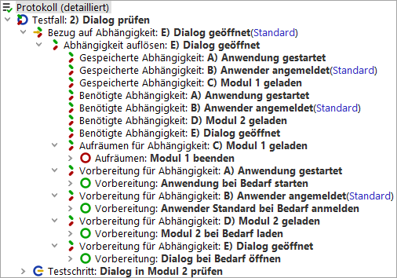 | ||
|
| Abbildung 8.7: Stapel von Abhängigkeiten A-B-D-E | ||
Eine 'Abhängigkeit' kann ihrerseits von den Werten gewisser Variablen abhängen. Diese Variablen werden als 'Charakteristische Variablen' einer 'Abhängigkeit' bezeichnet. Beim Abgleich der benötigten 'Abhängigkeit' Knoten mit den bereits ausgeführten auf dem Abhängigkeitenstapel werden die 'Charakteristischen Variablen' mit herangezogen. Zwei 'Abhängigkeit' Knoten gelten nur dann als gleich, wenn auch die Werte aller 'Charakteristischen Variablen' zwischen der vorherigen und der aktuellen Ausführung übereinstimmen. Somit ist es auch möglich, dass eine 'Abhängigkeit' sich, direkt oder indirekt, mehrfach auf die selbe 'Abhängigkeit' bezieht, aber mit unterschiedlichen Werten für die 'Charakteristischen Variablen'. In diesem Fall taucht die bezogene 'Abhängigkeit' mehrfach in der Liste der benötigten 'Abhängigkeiten' und nach deren Ausführung auf dem Abhängigkeitenstapel auf, jeweils mit dem entsprechenden Wert der 'Charakteristischen Variablen'.
Wird die 'Abhängigkeit' abgebaut und ihr 'Aufräumen' Knoten ausgeführt, erhalten die 'Charakteristischen Variablen' innerhalb des 'Aufräumen' Knotens die gespeicherten Werte, also die, die sie zum Zeitpunkt der Ausführung des 'Vorbereitung' Knotens hatten. Dadurch wird sicher gestellt, dass die Ausführung eines 'Testfall' Knotens mit anderen Variablenwerten die 'Aufräumen' Knoten beim Abbau des Abhängigkeitenstapels nicht aus der Bahn werfen kann. Denken Sie zum Beispiel an die häufig für den Namen des SUT Clients verwendete Variable "client". Wird zunächst ein Satz von Tests für ein SUT ausgeführt und benötigt der nächste 'Testfall' ein ganz anderes SUT, wird eventuell die Variable "client" umdefiniert. Der 'Aufräumen' Knoten zum Beenden des alten SUT muss aber den alten Wert für "client" erhalten, sonst könnte er den alten SUT Client gar nicht beenden. Darum kümmert sich QF-Test automatisch, sofern sich "client" unter den 'Charakteristischen Variablen' der 'Abhängigkeit' befindet.
Im Protokoll sieht man die den Wert der 'Charakteristischen Variablen' hinter der jeweiligen 'Abhängigkeit':
|
| 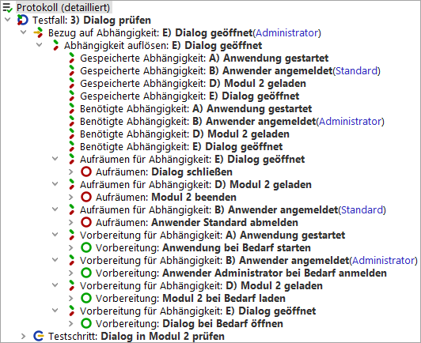 | ||
|
| Abbildung 8.8: 'Charakteristische Variablen' | ||
Weitere typische Beispiele für 'Charakteristischen Variablen' sind die JDK Version, wenn das SUT mit verschiedenen JDK Versionen getestet werden soll, oder der Browsername im Falle einer Webanwendung. Diese würden in unserem Beispiel als 'Charakteristische Variablen' für 'Abhängigkeit' A (Anwendung gestartet) definiert.
In manchen Anwendungsfällen kann es nötig sein, dass der 'Aufräumen' Knoten einer 'Abhängigkeit' nach jedem 'Testfall' ausgeführt wird. In diesem Fall kann das Attribut 'Aufräumen erzwingen' gesetzt werden.
Falls bei einem der 'Abhängigkeit' Knoten auf dem Stapel das Attribut 'Aufräumen erzwingen' gesetzt ist, werden von diesem und eventuell nachgeordneten 'Abhängigkeit' Knoten die 'Aufräumen' Knoten ausgeführt.
In diesem Beispiel verlangt die Testlogik, dass das Anwendungsmodul 2 nach Testausführung immer beendet werden muss. Somit wird im 'Abhängigkeit' Knoten D das Attribut 'Aufräumen erzwingen' gesetzt.
Nun würden in Schritt 2 unserer Beispiele immer die 'Aufräumen' Knoten der 'Abhängigkeit' E (Dialog schließen) und der 'Abhängigkeit' D (Modul 2 beenden) ausgeführt.
QF-Test räumt 'Abhängigkeiten' je nach Bedarf der 'Testfälle' auf.
Sie können den Stapel der 'Abhängigkeiten' auf zwei Arten explizit leeren:
Bei einem 'Testfall', der selbst keine 'Abhängigkeiten' nutzt, bleibt der Stapel der 'Abhängigkeiten' unberührt, d.h. es werden keine 'Aufräumen' Knoten ausgeführt. Erst beim nächsten 'Testfall' mit 'Abhängigkeiten' wird der Abhängigkeitenstapel wieder berücksichtigt.
Eine weitere hervorragende Eigenschaft von 'Abhängigkeiten' ist die Möglichkeit, Fehler ohne weiteren Aufwand zu eskalieren. Betrachten wir wieder das Beispiel aus dem vorhergehenden Abschnitt nachdem der erste Abhängigkeitenstapel A-B-C (Anwendung gestartet, Anwender angemeldet, Modul 1 geladen) aufgebaut und alle zugehörigen 'Vorbereitung' Knoten ausgeführt wurden. Was passiert, wenn bei der Ausführung des eigentlichen 'Testfall' Knotens das SUT auf einen wirklich schweren Fehler stößt wie z.B. ein Deadlock und nicht mehr auf Benutzereingaben reagiert?
Schlägt beim Abbau des Stapels von 'Abhängigkeiten' die Ausführung eines 'Aufräumen' Knotens fehl, baut QF-Test die nächstzugrunde liegende 'Abhängigkeit' ab, bei erneuten Problemen eine weitere und so fort. Analog dazu führt beim Aufbau des Stapels ein Fehler in einem 'Vorbereitung' Knoten dazu, dass zunächst eine weitere 'Abhängigkeit' abgebaut wird und dann noch einmal die 'Vorbereitung' Knoten ausgeführt werden.
Dies lässt sich wieder genau im Protokoll nachverfolgen:
|
| 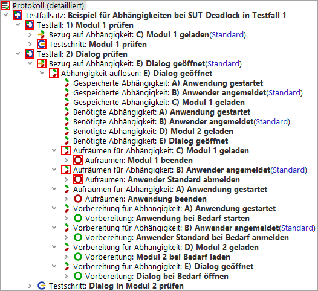 | ||
|
| Abbildung 8.9: Fehlereskalation in 'Abhängigkeiten' | ||
Damit die Fehlereskalation zuverlässig funktioniert, ist es sehr wichtig, 'Aufräumen' Knoten so zu implementieren, dass entweder der gewünschte Zustand erreicht oder eine Exception geworfen wird. Letzteres führt nur zum Erfolg, wenn in einer der grundlegenderen 'Abhängigkeiten' ein umfassender 'Aufräumen' Knoten vorhanden ist, der das SUT in einen definierten Zustand bringen oder beenden kann. Dabei ist es wichtig, dass zum Beispiel der 'Aufräumen' Knoten, der das SUT beenden soll, nicht nur versucht, das SUT etwa über das Datei->Beenden Menü sauber herunterzufahren, sondern auch abprüft, ob die Aktion erfolgt reich war und gegebenenfalls drastischere Maßnahmen durchführt wie zum Beispiel den Prozess des SUT "abzuschießen". Ein solcher 'Aufräumen' Knoten sollte also einen Try/Catch Block verwenden und zusätzlich in einem 'Finally' Knoten sicherstellen, dass das SUT auf jeden Fall beendet ist.
|
| 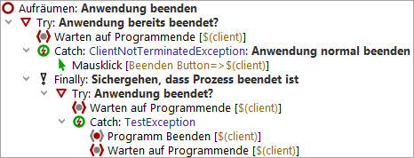 | ||
|
| Abbildung 8.10: Typischer 'Aufräumen' Knoten | ||
Bei sauber implementierter Fehlerbehandlung werden sich 'Testfälle' selbst bei schweren Fehlern kaum gegenseitig beeinflussen. Dies schützt vor dem Verlust aller Testergebnisse eines lang dauernden nächtlichen Testlaufs nur aufgrund eines einzelnen Fehlers zu einem frühen Zeitpunkt.
Neben der automatischen Eskalation von Fehlern unterstützt ein 'Abhängigkeit' Knoten
auch die explizite Behandlung von Fehlern oder Exceptions, die bei der Ausführung eines
'Testfall' Knotens auftreten. Hierzu können 'Catch' Knoten am Ende des 'Abhängigkeit' Knotens
eingefügt werden. Diese fangen im 'Testfall' auftretende Exceptions und können gezielt
darauf reagieren. So könnte zum Beispiel eine DeadlockTimeoutException mit
umgehender Terminierung des SUT Prozesses quittiert werden. Eine derart gefangene
Exception wird in Protokoll und Report weiterhin als Exception aufgeführt.
Des Weiteren kann ein 'Fehlerbehandlung' Knoten in der 'Abhängigkeit' zwischen dem 'Aufräumen' Knoten und dem ersten 'Catch' Knoten eingefügt werden. Dieser wird ausgeführt, wenn der 'Testfall' mit dem Ergebnis "Fehler" beendet wird. Im Fall einer Exception wird der 'Fehlerbehandlung' Knoten nicht ausgeführt, da das in der Regel eher noch mehr Probleme verursachen würde und sogar mit der Behandlung von Exceptions kollidieren könnte. Um im Fall von Fehlern und Exceptions die selben Konsequenzen zu ziehen, können Sie dafür eine 'Prozedur' implementieren und diese aus 'Fehlerbehandlung' und 'Catch' Knoten heraus aufrufen. 'Fehlerbehandlung' Knoten sind nützlich, um Informationen zu ermitteln und zu speichern, die QF-Test nicht bereits automatisch zur Verfügung stellt.
So könnten Sie beispielsweise eine Kopie von temporären Dateien oder Protokollen erstellen, die von Ihrem SUT angelegt werden und eventuell Aufschlüsse über die Fehlerursache liefern könnten. Es wird jeweils nur der oberste 'Fehlerbehandlung' Knoten auf dem Stapel von Abhängigkeiten ausgeführt. Wenn also bei einem Stapel der Form A,B,C,D] sowohl A als auch C einen 'Fehlerbehandlung' Knoten enthalten, wird nur der Knoten von C ausgeführt. Andernfalls wäre es schwierig, in der spezialisierten 'Abhängigkeit' C die 'Fehlerbehandlung' der allgemeineren 'Abhängigkeit' A zu modifizieren. Um die 'Fehlerbehandlung' von A in C wiederzuverwenden, implementieren Sie diese in einer 'Prozedur'.
Hinweis Dieser Absatz ist für Sie nur interessant, wenn Sie mehrere Applikationen haben, die Sie gleichzeitig testen wollen und wenn der 'Abhängigkeit' Knoten eines Testfalls keine Auswirkung auf den bestehenden Abhängigkeitenstapel haben soll.
Ein typischer Anwendungsfall ist der Test ganzer Prozessketten, die mehrere Applikationen umfassen.
Als Beispiel soll hier folgende Situation dienen: Der Außendienst erfasst die Angebotsdaten über eine Web-Applikation und schickt diese an ein Datenbanksystem in der Zentrale, wo die Angebote vervollständigt, gedruckt und versandt werden. Eine Kopie der versandten Aufträge wird in einem separaten Dokumentenmanagementsystem (DMS) abgespeichert.
|
| 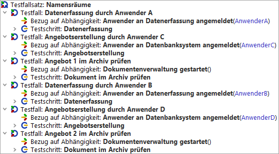 | ||
|
| Abbildung 8.11: Beispiel 'Testfallsatz' für Namensräume | ||
In obigem Beispiel erfassen zwei unterschiedliche Mitarbeiter (AnwenderA und AnwenderB) die Daten für das Angebot, zwei weitere (AnwenderC und AnwenderD) erstellen die Angebote und die Archivierung wird im Dokumentenmanagementsystem geprüft. Damit sich die Anhängigkeiten nicht gegenseitig beeinflussen, wird im 'Bezug auf Abhängigkeit' Knoten jeweils ein passender Name im Feld 'Namensraum für Abhängigkeiten' eingetragen.
Wenn man den Testfallsatz ausführt, sieht man im Protokoll, dass für den ersten Testfall ein Abhängigkeitenstapel im Namensraum "Datenerfassung" angelegt wird:
|
| 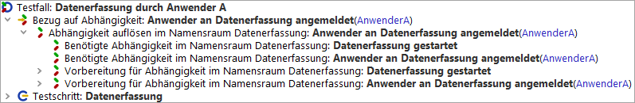 | ||
|
| Abbildung 8.12: Abhängigkeitenbehandlung für Testfall Datenerfassung durch Anwender A | ||
Für den zweiten Testfall wird ein Abhängigkeitenstapel im Namensraum "Datenbanksystem" angelegt. Der Abhängigkeitenstapel im Namensraum "Datenerfassung" wird nicht betrachtet. Es wird also das Datenbanksystem gestartet. Die Anwendung zur Datenerfassung bleibt unverändert.
|
| 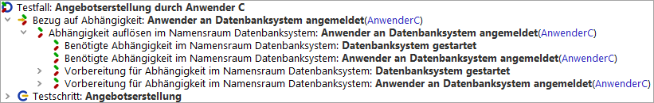 | ||
|
| Abbildung 8.13: Abhängigkeitenbehandlung für Testfall Angebotserstellung durch Anwender C | ||
Für den dritten Testfall wird ein Abhängigkeitenstapel im Namensraum "Dokumentenverwaltung" angelegt. Die Abhängigkeitenstapel in den Namensräumen "Datenerfassung" und "Datenbanksystem" werden nicht betrachtet. Es wird also das Dokumentenmanagementsystem gestartet. Die beiden anderen Anwendungen bleiben unverändert.
|
| 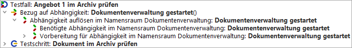 | ||
|
| Abbildung 8.14: Abhängigkeitenbehandlung für Testfall Angebot 1 im Archiv prüfen | ||
Im vierten Testfall werden die benötigten Abhängigkeiten mit dem vorhandenen Stapel im Namensraum "Datenerfassung" aus dem ersten Testfall abgeglichen. Die Abhängigkeitenstapel in den beiden anderen Namensräumen werden nicht betrachtet. Es wird also Anwender A abgemeldet und Anwender B an der Datenerfassung neu angemeldet. Die beiden anderen Anwendungen bleiben unverändert.
|
| 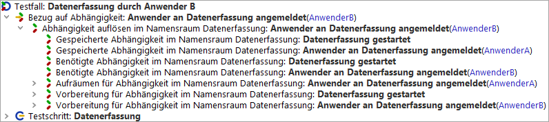 | ||
|
| Abbildung 8.15: Abhängigkeitenbehandlung für Testfall Datenerfassung durch Anwender B | ||
Im fünften Testfall werden die benötigten Abhängigkeiten mit dem vorhandenen Stapel im Namensraum "Datenbanksystem" aus dem zweiten Testfall abgeglichen. Die Abhängigkeitenstapel in den beiden anderen Namensräumen werden nicht betrachtet. Es wird also Anwender C abgemeldet und Anwender D im Datenbanksystem neu angemeldet. Die beiden anderen Anwendungen bleiben wiederum unverändert.
|
| 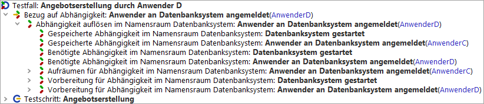 | ||
|
| Abbildung 8.16: Abhängigkeitenbehandlung für Testfall Angebotserstellung durch Anwender D | ||
Im letzten Testfall wird die benötigte Abhängigkeit mit dem vorhandenen Stapel im Namensraum "Dokumentenverwaltung" aus dem dritten Testfall abgeglichen. Die Abhängigkeitenstapel in den beiden anderen Namensräumen werden nicht betrachtet. Es ergibt sich kein Handlungsbedarf bezüglich Aufräumarbeiten. Die beiden anderen Anwendungen bleiben wiederum unverändert.
|
| 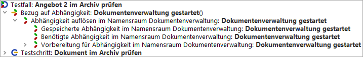 | ||
|
| Abbildung 8.17: Abhängigkeitenbehandlung für Testfall Angebot 2 im Archiv prüfen | ||
Wie jede programmierähnliche Tätigkeit benötigt Testautomatisierung eine gute Dokumentation um langfristig erfolgreich sein zu können. Andernfalls besteht die Gefahr, den Überblick zu verlieren und Dinge unnötigerweise mehrfach zu implementieren oder Tests zu übersehen, die automatisiert werden sollten. Eine gute Dokumentation ist von unschätzbarem Wert, wenn Sie sich auf der Suche nach der Ursache für einen fehlgeschlagenen Test durch ein Protokoll arbeiten. Außerdem trägt sie wesentlich zur Lesbarkeit von Reports bei.
Eine gute Möglichkeit, die Tests lesbar zu gestalten und gleichzeitig zu dokumentieren sind die 'Sequenz' und 'Testschritt' Knoten, mit deren Hilfe Sie die aufgenommenen Knoten zusammenfassen und beschriften können.
Es steht auch ein 'Kommentar' Knoten zur Verfügung um Erläuterungen einzufügen.
Wenn Sie eine Dokumentation erstellen wollen, die auch außerhalb von QF-Test verfügbar sein soll, so können Sie basierend auf den 'Bemerkung' Attributen von 'Testfallsatz', 'Testfall', 'Package' und 'Prozedur' Knoten einen Satz von umfassenden HTML Dokumenten erstellen, welche die benötigten Informationen schnell auffindbar machen. Die verschiedenen Arten von Dokumenten und die Mittel zu ihrer Erstellung werden ausführlich in Kapitel 21 beschrieben.
| Letzte Änderung: 6.9.2022 Copyright © 1999-2022 Quality First Software GmbH |